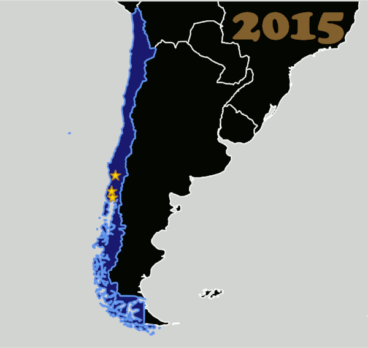

Chilean National Championships 2018 - Torneo X returns!
Chile's National Tournament, the mysteriously named Torneo X, has been running for as long, or longer, than many of the better-known European tournaments, having begun in 2015. (The Men's Derby equivalent in Chile, Torneo X-MEN, started 2 years later.)
With the 4th event coming up at the start of next month, we're giving you a quick overview of the tournament and the players.
As Chile is a long, thin, country, as the tournament has expanded, it has done so mostly north/south, following the areas of highest population density. A bit like Scotland, Chile has a band of high population (in this case, roughly in the middle of the country), surrounded by low density rural areas to the north and south. Torneo X 2018 fills this entire high density area, for the first time in its history.
 Torneo X's growth over time since inception.
In 2017, Chillán's Chillanrolleras retained the title from the previous year, maintaining an unbroken streak since they joined the tournament. However, Viña del Mar's Tacones Bandidos pushed them until the very last bouts for that title, so a repeat performance in 2018 is definitely not assured.
This is especially true as, with 2018's tournament growing to become the biggest yet, there are even more challengers for the cup. Especially likely to want to make a big splash are Santiago's Metropolitan Roller Derby, the only WFTDA-member league in the tournament, although it's their B-team, the Bayonetas, who are competing here.
Torneo X 2018 will consist of 4 fixtures across the coming months, spread across the competing regions:
- 1st Fixture: Osorno (Deskarriadas) 4-5 August [EVENT]
- 2nd Fixture: Santiago (Adrenaline) 8-9 September
- 3rd Fixture: Viña del Mar (Tacones Bandidos) 6-7 October
- Final Puerto Montt (Diosas Volcanicas) 9-10 November

The historical rankings for the previous editions of the tournament are:
| Rank | 2015 | 2016 | 2017 |
| 1 | Nativas RD | Chillanrolleras | Chillanrolleras |
| 2 | Deskarriadas | Deskarriadas | Tacones Bandidos |
| 3 | Diosas Volcanicas | Nativas RD | Diosas Volcanicas |
| 4 | Diosas Volcanicas | Deskarriadas | |
| 5 | A Sangre Fría RD (Osorno) | Adrenaline | |
| 6 | RD Valdivia / Cuello Negro [as "Indomitas" 2018] |
Chillanrolleras Derby Club
Chíllan's premier team, and twice winners of the Torneo X, Chillanrolleras were bouting as early as 2013, although we have a gap in our records in 2015. From 2016, they've hosted multiple tournaments - including fixtures for the 2017 Torneo X itself - and have rarely lost a bout. SRDRank's current (unpublished) rating places them as the favourites to win the Torneo X title, and maintain their streak.
Chillanrolleras, as with many teams in Chile, have a brother league - Chillanrolleros - who share resources with them.
Tacones Bandidos
Tacones Bandidos are based in the coastal region of Vińa del Mar, Valparaíso. In their current form, they date from 2014, as a partnership with men's team, Bototos Bandidos. The Tacones have had a pretty busy year to date - playing not just Chilean teams, but also Buenos Aires' Sailor City Rollers B, who they fought to a near-draw within the last month.
We'd rate the Tacones as likely to strongly contest the second place with the tournament newcomers from Santiago.
Diosas Volcánicas Roller Derby
Puerto Montt & Puerto Varas's Diosas Volcánicas are one of the older teams in Chile, dating back to 2012, founded by Dahmenatrix from San Diego Derby Dolls. They're one of the most southerly teams in Roller Derby (and certainly in Latin America), with only a few teams in southern Argentina and New Zealand much more to the south.
They've had a difficult time finding practice space, and have had periods where most training was outside (in one of the wetter regions of Chile!). This year, they've finally achieved stable training space - in a local prison gym! - and have been working on recruitment and training more intensively since then. Their aim for 2018 is to qualify for the finals (in the top 4 of the table)... and then who knows how high in 2019?
Deskarriadas
Deskarriadas are the largest team in Osorno, founded in May 2014. They're the hosts of the first fixture of this year's Torneo X, in the first weekend in August.
The Deskarriadas have been working towards the Torneo X all year, aiming to improve on their performance last year (where they placed 4th). In the first two years, they managed 2nd place, which is, we assume, their target for 2018.
Adrenaline Roller Derby
Adrenaline Roller Derby, one of two Santiago-based teams in the tournament, are the youngest contestants, founded in 2016. This relative youth has counted against them in ratings, and we'd consider them likely to be contesting in the same position as last year.
As hosts of the second fixtures in the tournament, home team advantage may well help them to beat expectations, in a fairly close lower half of the table.
Indomitas RD Valdivia
Roller Derby Valdivia consists of two member teams - the men's team, Indomitos, and the women's team, which used to be called Cuello Negro ("Black Swans"), but rebranded to Indomitas this year, whilst keeping the same logo. This rebrand was triggered by a complete rebuilding of the team, with the new "Indomitas" very different to the old 2015-2017 Cuello Negro in terms of skaters. The Indomitas told us that they have spent the past year in intensive drilling, so that all their tactics are instinctive. They are prepared to demonstrate the heart, tenacity and perseverance that they can bring to the game.
Nativas Roller Derby
Temuco's first team, the Nativas date back to 2013. As with many of the teams here, they have "womens" and "mens" teams - although we can't find a name for the women's team except "Nativas Roller Derby". As one of the oldest teams in Chile, the Nativas competed in the first ever Torneo X, although they skipped the 2017 edition.
Due to a sparsity of bout data for the Nativas in FTS, we consider the returning team to be something of a wild card.
Metropolitan Roller Derby B, Bayonetas
Santiago's Metropolitan Roller Derby are the only Chilean members of the WFTDA, with their travel team currently ranked at 122 (May 31 ranking release) by WFTDA.
Their B-team, the Bayonetas, have existed since 2014, and are one of the few teams in this tournament to have played extensively internationally - at least within South America. Out of the Chilean leagues, they've played nearby Valparaíso's Tacones Bandidos most often, with wildly different results - beating them 2 to 1 early in 2017, and losing by a similar ratio by the end of that year.